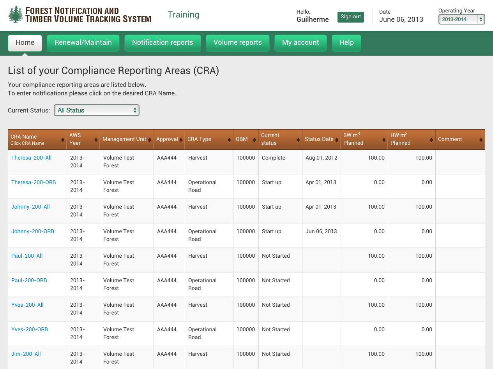
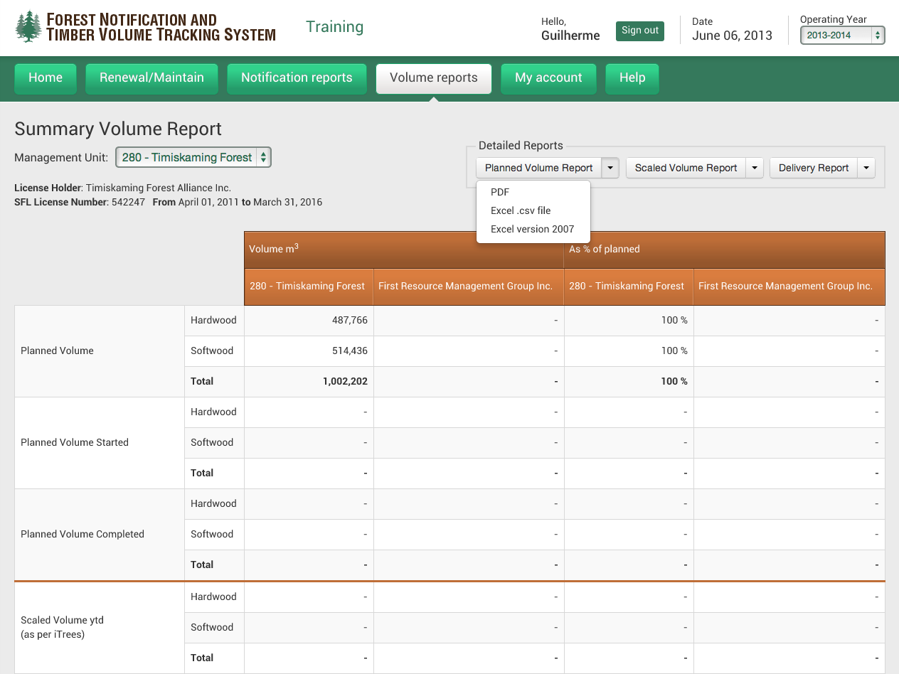
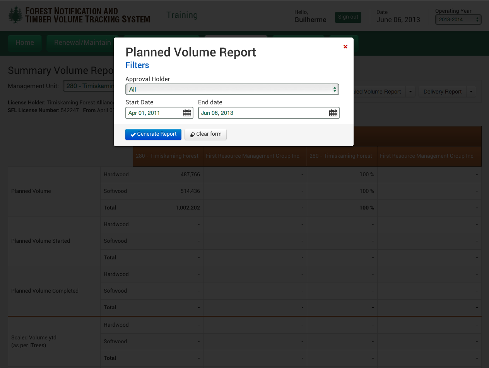

<div class="portfolio-single container">
		
    <div class="row">

        <div class="span8 portfolio-field portfolio-title">
        	<h2>Notification and Timber Track System</h2>
        </div>
        
		<div class="span4 portfolio-field portfolio-nav">
            <a class="icon button back" href="#/portfolio">close</a>
        </div>
		
		<div class="span8 portfolio-field">
            
            <div class="video-wrapper">
                <iframe src="//player.vimeo.com/video/53110017?byline=0&amp;color=ffffff" width="500" height="281" frameborder="0" webkitallowfullscreen mozallowfullscreen allowfullscreen></iframe>
            </div>

            
            
            
        </div>
		
		<div class="span4 portfolio-field">
			
            <h3>Description</h3>
            <p>This software's main goal is to track timber haul at Ontario's forest. We use Zend 2 and MySQL with Doctrine 2, that is always a great partnership.</p>
            <p>I gained a lot of experience with this project, working with international teams, and a huge scope, it was almost three hundred pages in a very technical document. Sometimes I almost threw everything up and gave the money back, because it was really complex, but then you look for the impact and the relevance that this project has, FRMG manage currently 5 millions of hectares at Ontario's forest.</p>
            <p>Gladly the project was delivered with some delay but very stable, and is still operational and running till today. The efforts are rewarded once you see the impact of this software as a contribution to the environment. Take a look at the pictures and the video too, so you can understand why it make me so proud.</p>
            
            <h3>Client</h3>
            <p><a href="http://firstresourcemanagementgroup.com/" target="_blank">First Resource Management Group Inc.</a></p>
            
            <h3>Technology</h3>
            <ul class="tags">
                <li><a>HTML/CSS</a></li>
                <li><a>jQuery</a></li>
                <li><a>Responsive Design</a></li>
                <li><a>Zend Framework 2</a></li>
                <li><a>Doctrine 2</a></li>
                <li><a>MySQL</a></li>
            </ul>
            
            <div class="launch">
            	<a href="http://frmg-apis.com/ci/public/apis/user/login" class="btn">LAUNCH PROJECT</a>
            </div>
            
        </div>

    </div>
</div>